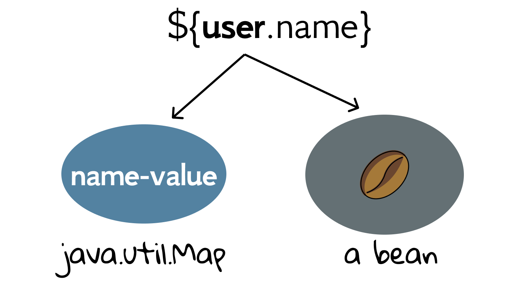
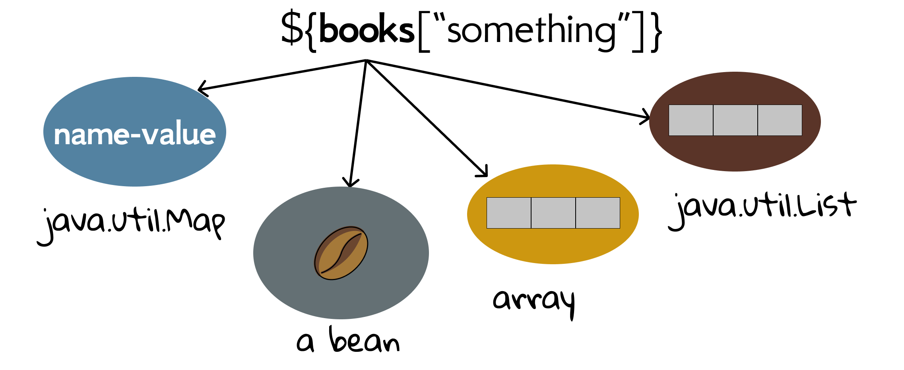

5.2 Expression Language
EL is always within curly braces, and prefixed with dollar sign. In this chapter, we will study its syntax in depth.
Anatomy of EL
The first named variable in EL is either an implicit object or an attribute[1]. As for EL implicit objects, except for pageContext (not shown in the Fig 5.1), they are essentially Map objects (java.util.Map)[2]. Note that they are not the same as the JSP implicit objects.
${requestScope.name}
${requestScope.user.name}
[!TIP] The
requestScopeis not the request object; we can only use it to get request attributes. So are otherxxxScopeimplicit objects.
Since attributes are most commonly used, we mainly focus on attributes, which can be the names of attributes stored in any of the four available scopes. Another question: why can ${user.name} get the name of a user? The dot (.) operator is used to access properties and map values. If the expression has a variable followed by a dot, the left-hand variable must be a map or a bean.

So is user a bean? Yes, but it is not the one that can be cooked. Bean is a class that encapsulates one or more objects into a single standardized object. For example, Book encapsulates title (String) and price (float), and User encapsulates name (String), age (int), and favorite book (Book). This standardization allows the beans to be handled in a more generic fashion, allowing easier code reuse and introspection. Java beans generally will not contain any business logic rather those are used for holding some data in it, and their holding data are often called properties.
Java Bean is an important concept on the Java Platform, and we expect beans will obey some conventions[3]:
As part of the standardization, all beans must be serializable, have a zero-argument constructor, and allow access to properties using getter and setter methods.
So, strictly speaking, neither User nor Book is a Java bean. Note that those conventions (e.g., implementing Serializable) are always not per se mandatory, but very useful sometimes. Back to EL, ${user.name} works because 1) user is the name of an attribute, 2) and its value User is a Java bean, 3) and User has getName() and setName() method[4].
By the way, ${user.name} works because we assume that there is only one attribute named user in four scopes. If there may be a conflict, you can restrict its scope explicitly, such as ${requestScope.user.name}, ${sessionScope.user.name}.
More powerful [] operator
The dot operator works only when the thing on the right is a bean property or map key for the thing on the left. That's it. But the [] operator is a lot more powerful and flexible.
${user["name"]}
${user.name}
The two lines of code are identical, but [] is better because it gives you more options: the thing on the left can also be a List or an array. That also means the thing on the right can be a number, or anything that resolves to a number, or an identifier that doesn't fit the Java naming rules. For example, you might have a Map key in the name "com.swufe.javaee".

[!TIP] For beans and Maps, you can use either dot operator or bracket operator[5].
The following is an example using the [] operator with an array.
In BookServlet.java,
String[] books = {"Gone with the Wind", "The Great Gatsby",
"1587, a Year of No Significance"};
request.setAttribute("bookArray", books);
request.getRequestDispatcher("/WEB-INF/book.jsp").forward(request, response);
In book.jsp,
${bookArray[0]}
It even works when the index is a String literal, and the index is coerced to an int: ${bookArray["0"].
We can also use nested expressions inside the brackets. Based on the previous example, we add a HashMap to count books:
Map<String, Integer> bookCount = new HashMap<>();
bookCount.put("Gone with the Wind", 42);
bookCount.put("The Great Gatsby", 100);
bookCount.put("1587, a Year of No Significance", 130);
request.setAttribute("bookCount", bookCount);
And in JSP, ${bookCount[bookArray[0]]} will output 42.
Handy EL operators
You shouldn't do calculations and logic from EL. Remember, a JSP is the View, and the View’s job is to render the response, not to make Big Important Decisions or do Big Processing. But, sometimes a little arithmetic or a simple boolean test might come in handy. So, with that perspective, here's a look at the most useful EL arithmetic, relational, and logical operators.
- Arithmetic: +, -, *, / (div), % (mod)
- Logical: && (and), || (or), ! (not)
- Relational: == (eq), != (ne), < (lt), > (gt), <= (le), >= (ge)
In Operator.java of ch5/el:
String num = "42";
request.setAttribute("num", num);
int i = 43;
request.setAttribute("integer", i);
request.getRequestDispatcher("/WEB-INF/operator.jsp").forward(request, response);
And in operator.jsp:
${integer + 2}
${integer le 12}
${integer > 12}
${num > 43}
${42 div 0}
The code above will output
- 45
- false
- true
- false
- Infinity
Note that in ${num > 43}, the "num" attribute was found, and its value "2" coerced to an int. You can divide by zero in EL, and you will get an INFINITY, not an error[6].
A final note about Java beans
People sometimes get confused about POJO and Java bean[7].
POJO stands for Plain Old Java Object. It is an ordinary Java object, not bound by any special restriction other than those forced by the Java Language Specification and not requiring any classpath. POJOs are used for increasing the readability and re-usability of a program. POJOs have gained the most acceptance because they are easy to write and understand. Both User and Book are POJOs.
Beans are special type of POJOs. There are some restrictions on POJO to be a bean.
- It should implement serializable interface.
- Fields are accessed only by getters and setters.
- Fields have only private visibility.
- It must have a no-arg constructor.
Again, not all the patterns are absolute requirements. For example, the minimal requirement of a Java bean in EL is the getter and setter methods.
[1] The dot is not always needed. The dot operator is used to access properties and map values. By the way, we can also get other information like parameters, cookies using EL, but that is considered bad.
[2] Map is an object that maps keys (names) to values.
[3] https://en.wikipedia.org/wiki/JavaBeans
[4] The thing on the left of dot operator must follow normal Java naming rules for identifiers. For example, it must start with a letter, _, or $.
[5] When using dot operators for Maps, the names (keys) should be valid Java identifiers.
[6] However, you cannot use the remainder operator (% or mod) against a zero.
[7] https://stackoverflow.com/questions/1612334/